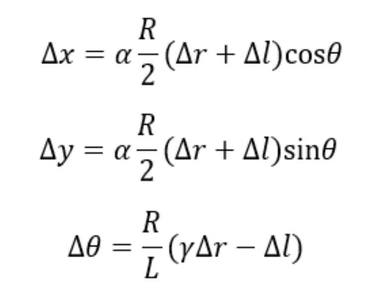
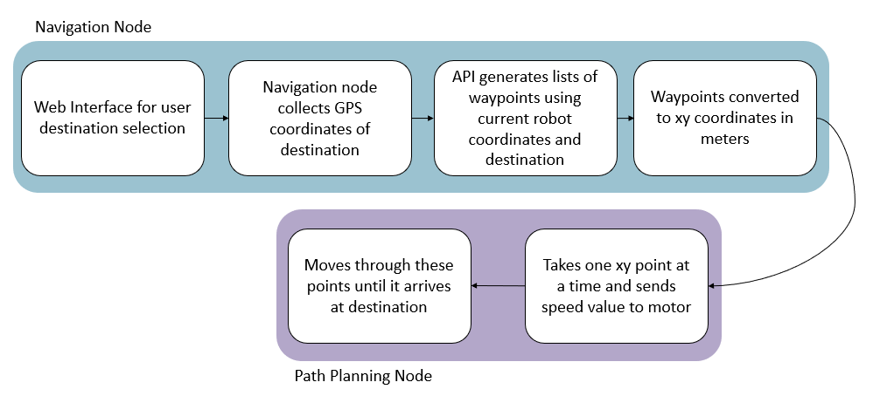

Senior Capstone Project: Autonomous Delivery Robot

Project Overview
Collision Avoidance and Wayfinding
The collision avoidance and wayfinding had two main goals, detecting obstacles and detecting clear lanes that the robot can follow and stay on it. To achieve this, three levels of sensors were used in order of priority as show below:
- Ultrasonic Distance Sensors: Highest priority obstacle detection sensors in our project and detects distances closest to the robot. For efficiency and speed, the 5V ultrasonic sensors are connected to an Arduino UNO R3 board with a python program that collects the ultrasonic readings and sends them out to the BeagleBone Blue via a USB connection.
- 2D LiDAR: Detects obstacles in a 5m range around the robot. Range of detection for this project was limited to 1.5m and to focus on obstacles directly in front (30 degrees) of the robot to avoid stray signals. During each measurement process, the laser radar emits a modulated infrared laser signal, which is received by the optical vision acquisition system of the LiDAR after being reflected by the target object.
- Webcam: Least priority detection sensor responsible for lane detection as well as obstacle detection. Algorithm used relies on HSV (Hue Saturation Value) which decides the path that the robot should take via color distinction.
Navigation and Path Planning
Responsible for taking a destination parameter from a user, the navigation and path-planning nodes use that to orient the robot and cause it to move through a predetermined path to arrive at that destination. The process is detailed in the flowchart below:
- Optical Encoders: Two E4T OEM Miniature Optical Encoders attached to the shafts of the left and right motors. These equations calculate the change in the x, y, and heading of the robot from the change in the right and left encoder readings.
- Compass Module: Built into the BeagleBone Blue, called the MPU-9250 chip. It is a 9-axis Inertial and Measurement Unit (IMU) which contains an accelerometer, gyroscope and magnetometer.
- GPS Module: Adafruit Ultimate GPS breakout-board with communication enabled via UART. We parse the NMEA sentences and use the GPGGA messages. 